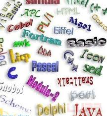

SMART SITE
网站首页
语言之美
前沿技术
企业动态
联系我们
帮助中心
注册
登录
今日头条
移动优先的设计常识：应用如何组织？
[2011年最受欢迎的五款Web开发工具] [到底什么情况该选择开发Web App？]
[WTF Mobile Web：发掘糟糕的移动Web设计案例]
[comScore：Facebook仍主宰社交网络] [社交网络：小偷的行窃利器]
[Google+巅峰对决Facebook社交大战鹿死谁手]
语言之美
更多

短小精悍的C++变量定义问题
关于JAVA数据库查询优化的问题
关于C#读取文档内容
探讨泛型类与普通类区别
C++中堆栈模型的问题
php排序1亿个QQ号码
判断两个字符串相等的最优算法
前沿技术
更多
《连线》：解密亚马逊虚拟超级计算机
未来全球数据中心发展方向
研发新型光学装置为超级计算机提速
2012年：数据中心和云网络架构将盛行
存储之变 蔚为大观
虚拟化和云计算路向何方？
数据显示：云计算2012年将走向普及
企业动态
更多
谷歌Mozilla关系微妙:既是金主又是对手
苹果在意大利面临90万欧元罚单
2012年Bing将发威的3个原因
谷歌新电视广告主推Google+多人视频服务
微软2012年五大动向
2012移动行业十大预测：苹果或推7英寸iPad